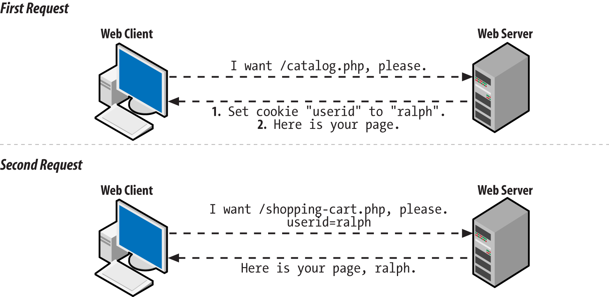

Programació Web¶
Duració i criteris d'evaluació
Duració estimada: 12 hores
| Resultat d'aprenentatge | Criteris d'avaluació |
|---|---|
| 4. Desenvolupa aplicacions Web embegudes en llenguatges de marques analitzant i incorporant funcionalitats segons especificacions | a) S'han identificat els mecanismes disponibles per al manteniment de la informació que concerneix a un client Web concret i s'han assenyalat els seus avantatges. b) S'han utilitzat sessions per a mantenir l'estat de les aplicacions Web. c) S'han utilitzat cookies per a emmagatzemar informació en el client Web i per a recuperar el seu contingut. d) S'han identificat i caracteritzat els mecanismes disponibles per a l'autenticació d'usuaris. e) S'han escrit aplicacions que integren mecanismes d'autenticació d'usuaris. f) S'han realitzat adaptacions a aplicacions Web existents com a gestors de continguts o unes altres. g) S'han utilitzat eines i entorns per a facilitar la programació, prova i depuració del codi. |
Variables de servidor¶
PHP emmagatzema la informació del servidor i de les peticions HTTP en sis arrays globals:
$_ENV: informació sobre les variables d'entorn$_GET: paràmetres enviats en la petició GET$_POST: paràmetres enviats en el envio POST$_COOKIE: conté les cookies de la petició, les claus del array són els noms de les cookies$_SERVER: informació sobre el servidor$_FILES: informació sobre els fitxers carregats via upload
Si ens centrem en el array $_SERVER podem consultar les següents propietats:
PHP_SELF: nom del script executat, relatiu al document root (p.ej:/tenda/carret.php)SERVER_SOFTWARE: (p.ej: Apatxe)SERVER_NAME: domini, àlies DNS (p.ej:www.elche.es)REQUEST_METHOD: GETREQUEST_URI: URI, sense el dominiQUERY_STRING: tot el que va després de?en la URL (p.ej:heroe=Batman&nomene=Bruce)
Més informació en https://www.php.net/manual/es/reserved.variables.server.php
<?php
echo $_SERVER["PHP_SELF"]."<br>"; // /u4/401server.php
echo $_SERVER["SERVER_SOFTWARE"]."<br>"; // Apache/2.4.46 (Win64) OpenSSL/1.1.1g PHP/7.4.9
echo $_SERVER["SERVER_NAME"]."<br>"; // localhost
echo $_SERVER["REQUEST_METHOD"]."<br>"; // GET
echo $_SERVER["REQUEST_URI"]."<br>"; // /u4/401server.php?heroe=Batman
echo $_SERVER["QUERY_STRING"]."<br>"; // heroe=Batman
Altres propietats relacionades:
PATH_INFO: ruta extra després de la petició. Si la URL éshttp://www.php.com/php/pathinfo.php/algo/cosa?foo=bar, llavors$_SERVER['PATH_INFO']serà/alguna cosa/cosa.REMOTE_HOST: hostname que va fer la peticióREMOTE_ADDR: IP del clientAUTH_TYPE: tipus d'autenticació (p.ej: Basic)REMOTE_USER: nom de l'usuari autenticat
Apatxe crea una clau per a cada capçalera HTTP, en majúscules i substituint els guions per subratllats:
HTTP_USER_AGENT: agent (navegador)HTTP_REFERER: pàgina des de la qual es va fer la petició
<?php
echo $_SERVER["HTTP_USER_AGENT"]."<br>"; // Mozilla/5.0 (Windows NT 10.0; Win64; x64) AppleWebKit/537.36 (KHTML, like Gecko) Chrome/87.0.4280.88 Safari/537.36
Formularis¶
A l'hora d'enviar un formulari, hem de tindre clar quan usar GET o POST
-
GET: els paràmetres es passen en la URL
- <2048 caràcters, només ASCII
- Permet emmagatzemar la direcció completa (marcador / historial)
- Idempotent: dues crides amb les mateixes dades sempre ha de donar el mateix resultat
- El navegador pot cachejar les cridades
-
POST: paràmetres ocults (no encriptats)
- Sense límit de dades, permet dades binàries.
- No es poden escorcollar
- No idempotent → actualitzar la BBDD
Així doncs, per a recollir les dades accedirem al array depenent del mètode del formulari que ens ha invocat:
<?php
$par = $_GET["parametro"]
$par = $_POST["parametro"]
A l'hora d'enviar un formulari, hem de tindre clar quan usar GET o POST. Per als següents apartats ens basarem en el següent exemple:
Validació¶
Respecte a la validació, és convenient sempre fer validació doble:
- En el client mitjançant JS
- En servidor, abans de cridar a la capa de negoci, és convenient tornar a validar les dades.
<?php
if (isset($_GET["parametro"])) {
$par = $_GET["parametro"];
// comprobar si $par tiene el formato adecuado, su valor, etc...
}
Llibreries de validació
Existeixen diverses llibreries que faciliten la validació dels formularis, com són respect/validation o particle/validator. Quan estudiem Laravel aprofundirem en la validació de manera declarativa.
Parámetre multivalor¶
Existeixen elements HTML que envien diversos valors:
select multiplecheckbox
Per a recollir les dades, el nom de l'element ha de ser un array.
<select name="lenguajes[]" multiple="true">
<option value="c">C</option>
<option value="java">Java</option>
<option value="php">PHP</option>
<option value="python">Python</option>
</select>
<input type="checkbox" name="lenguajes[]" value="c" /> C<br />
<input type="checkbox" name="lenguajes[]" value="java" /> Java<br />
<input type="checkbox" name="lenguajes[]" value="php" /> Php<br />
<input type="checkbox" name="lenguajes[]" value="python" /> Python<br />
De manera que després en recollir les dades:
<?php
$lenguajes = $_GET["lenguajes"];
foreach ($lenguajes as $lenguaje) {
echo "$lenguaje <br />";
}
Tornant a emplenar un formulari¶
Un sticky form és un formulari que recorda els seus valors. Per a això, hem d'emplenar els atributs value dels elements HTML amb la informació que contenien:
<?php
if (!empty($_POST['modulos']) && !empty($_POST['nombre'])) {
// Aquí se incluye el código a ejecutar cuando los datos son correctos
} else {
// Generamos el formulario
$nombre = $_POST['nombre'] ?? "";
$modulos = $_POST['modulos'] ?? [];
?>
<form action="<?php echo $_SERVER['PHP_SELF'];?>" method="POST">
<p><label for="nombre">Nombre del alumno:</label>
<input type="text" name="nombre" id="nombre" value="<?= $nombre ?>" />
</p>
<p><input type="checkbox" name="modulos[]" id="modulosDWES" value="DWES"
<?php if(in_array("DWES",$modulos)) echo 'checked="checked"'; ?> />
<label for="modulosDWES">Desarrollo web en entorno servidor</label>
</p>
<p><input type="checkbox" name="modulos[]" id="modulosDWEC" value="DWEC"
<?php if(in_array("DWEC",$modulos)) echo 'checked="checked"'; ?> />
<label for="modulosDWEC">Desarrollo web en entorno cliente</label>
</p>
<input type="submit" value="Enviar" name="enviar"/>
</form>
<?php } ?>
Pujant arxius¶
S'emmagatzemen en el servidor en el array $_FILES amb el nom del camp del tipus file del formulari.
<form enctype="multipart/form-data" action="<?php echo $_SERVER['PHP_SELF']; ?>" method="POST">
Archivo: <input name="archivoEnviado" type="file" />
<br />
<input type="submit" name="btnSubir" value="Subir" />
</form>
Configuració en php.ini
file_uploads: on / offupload_max_filesize: 2Mupload_tmp_dir: directori temporal. No és necessari configurar-ho, agafarà el predeterminat del sistemapost_max_size: grandària màxima de les dades POST. Ha de ser major a upload_max_filesize.max_file_uploads: nombre màxim d'arxius que es poden carregar alhora.max_input_estafe: temps màxim emprat en la càrrega (GET/POST i upload → normalment es configura en 60)memory_limit: 128Mmax_execution_estafe: temps d'execució d'un script (no té en compte el upload)
Per a carregar els arxius, accedim al array $_FILES:
<?php
if (isset($_POST['btnSubir']) && $_POST['btnSubir'] == 'Subir') {
if (is_uploaded_file($_FILES['archivoEnviado']['tmp_name'])) {
// subido con éxito
$nombre = $_FILES['archivoEnviado']['name'];
move_uploaded_file($_FILES['archivoEnviado']['tmp_name'], "./uploads/{$nombre}");
echo "<p>Archivo $nombre subido con éxito</p>";
}
}
Cada arxiu carregat en $_FILES té:
name: nomtmp_name: ruta temporalsize: grandària en bytestype: tipus ACARONEerror: si hi ha error, conté un missatge. Si ok → 0.
Capçaleres de resposta¶
Ha de ser el primer a retornar. Es retornen mitjançant la funció header(cadena). Mitjançant les capçaleres podem configurar el tipus de contingut, temps d'expiració, redirigir el navegador, especificar errors HTTP, etc.
<?php header("Content-Type: text/plain"); ?>
<?php header("Location: http://www.ejemplo.com/inicio.html");
exit();
Es pot comprovar en les eines del desenvolupador dels navegadors web mitjançant Developer Tools → Network → Headers.
És molt comú configurar les capçaleres per a evitar consultes a la cache o provocar la seua renovació:
<?php
header("Expires: Sun, 31 Jan 2021 23:59:59 GMT");
// tres horas
$now = time();
$horas3 = gmstrftime("%a, %d %b %Y %H:%M:%S GMT", $now + 60 * 60 * 3);
header("Expires: {$horas3}");
// un año
$now = time();
$anyo1 = gmstrftime("%a, %d %b %Y %H:%M:%S GMT", $now + 365 * 86440);
header("Expires: {$anyo1}");
// se marca como expirado (fecha en el pasado)
$pasado = gmstrftime("%a, %d %b %Y %H:%M:%S GMT");
header("Expires: {$pasado}");
// evitamos cache de navegador y/o proxy
header("Expires: Mon, 26 Jul 1997 05:00:00 GMT");
header("Last-Modified: " . gmdate("D, d M Y H:i:s") . " GMT");
header("Cache-Control: no-store, no-cache, must-revalidate");
header("Cache-Control: post-check=0, pre-check=0", false);
header("Pragma: no-cache");
// redirigimos a otra página
header("Location: http://www.ejemplo.com/inicio.html");
exit();
// devolvemos un error 404
header("HTTP/1.0 404 Not Found");
// enviamos un archivo para descargar
header("Content-Type: application/force-download");
// enviamos un archivo json
header("Content-Type: application/json");
Gestió de l'estat¶
HTTP és un protocol stateless, sense estat. Per això, se simula l'estat mitjançant l'ús de cookies, tokens o la sessió. L'estat és necessari per a processos com ara el carret de la compra, operacions associades a un usuari, etc... El mecanisme de PHP per a gestionar la sessió empra cookies de manera interna. Les cookies s'emmagatzemen en el navegador, i la sessió en el servidor web.
Cookies¶
Les cookies s'emmagatzemen en el array global $_COOKIE. El que col·loquem dins del array, es guardarà en el client. Cal tindre present que el client pot no voler emmagatzemar-les.
Existeix una limitació de 20 cookies per domini i 300 en total en el navegador.
En PHP, per a crear una cookie s'utilitza la funció setcookie:
<?php
setcookie(nombre [, valor [, expira [, ruta [, dominio [, seguro [, httponly ]]]]]]);
setcookie(nombre [, valor = "" [, opciones = [] ]] )
?>
;. Respecte al contingut de la cookie, no pot superar els 4 KB.
Per exemple, mitjançant cookies podem comprovar la quantitat de visites diferents que realitza un usuari:
<?php
$accesosPagina = 0;
if (isset($_COOKIE['accesos'])) {
$accesosPagina = $_COOKIE['accesos']; // recuperamos una cookie
setcookie('accesos', ++$accesosPagina); // le asignamos un valor
}
?>
Inspeccionant les cookies
Si volem veure que contenen les cookies que tenim emmagatzemades en el navegador, es pot comprovar el seu valor en Dev Tools → Application → Storage
El temps de vida de les cookies pot ser tan llarg com el lloc web en el qual resideixen. Elles seguiran ací, fins i tot si el navegador està tancat o obert.
Per a esborrar una cookie es pot posar que expiren en el passat:
<?php
setcookie(nombre, "", 1) // pasado
O que caduquen dins d'un període de temps deteminado:
<?php
setcookie(nombre, valor, time() + 3600) // Caducan dentro de una hora

S'utilitzen per a:
- Recordar els inicis de sessió
- Emmagatzemar valors temporals d'usuari
- Si un usuari està navegant per una llista paginada d'articles, ordenats d'una certa manera, podem emmagatzemar l'ajust de la classificació.
L'alternativa en el client per a emmagatzemar informació en el navegador és l'objecte LocalStorage.
Sessió¶
La sessió afig la gestió de l'estat a HTTP, emmagatzemant en aquest cas la informació en el servidor.
Cada visitant té un ID de sessió únic, el qual per defecte s'emmagatzema en una cookie denominada PHPSESSID.
Si el client no té les cookies actives, l'ID es propaga en cada URL dins del mateix domini.
Cada sessió té associat un magatzem de dades mitjançant el array global $_SESSION, en el qual podem emmagatzemar i recuperar informació.
La sessió comença en executar un script PHP. Es genera un nou ID i es carreguen les dades del magatzem:

Les operacions que podem realitzar amb la sessió són:
<?php
session_start(); // carga la sesión
session_id() // devuelve el id
$_SESSION[clave] = valor; // inserción
session_destroy(); // destruye la sesión
unset($_SESSION[clave]; // borrado
Veurem mitjançant un exemple com podem inserir en un pàgina dades en la sessió per a posteriorment en una altra pàgina accedir a aqueixes dades. Per exemple, en sesion1.php tindríem
<?php
session_start(); // inicializamos
$_SESSION["ies"] = "IES Severo Ochoa"; // asignación
$instituto = $_SESSION["ies"]; // recuperación
echo "Estamos en el $instituto ";
?>
<br />
<a href="sesion2.php">Y luego</a>
I posteriorment podem accedir a la sessió en sesion2.php:
<?php
session_start();
$instituto = $_SESSION["ies"]; // recuperación
echo "Otra vez, en el $instituto ";
?>
Configurant la sessió en php.ini
Les següent propietats de php.ini permeten configurar alguns aspectes de la sessió:
session.save_handler: controlador que gestiona com s'emmagatzema (files)session.save_path: ruta on s'emmagatzemen els arxius amb les dades (si tenim un clúster, podríem usar/mnt/sessionsen tots els servidor de manera que apunten a una carpeta compartida)session.name: nom de la sessió (PHSESSID)session.acte_start: Es pot fer que s'autocarregue amb cada script. Per defecte està deshabilitatsession.cookie_lifetime: temps de vida per defecte
Més informació en la documentació oficial.
Serialització en PHP¶
La serialització és el procés de convertir una estructura de dades o un objecte en una seqüència de caràcters que pot ser fàcilment emmagatzemada o transmesa i després reconstruïda. PHP proporciona dos funcions principals per a això: serialize() i unserialize().
- serialize() La funció serialize() en PHP s'utilitza per a convertir una estructura de dades o un objecte en una representació de cadena.
$data = array("a", "b", "c");
$serialized_data = serialize($data);
echo $serialized_data;
a:3:{i:0;s:1:"a";i:1;s:1:"b";i:2;s:1:"c";}
- unserialize() La funció unserialize() en PHP s'utilitza per a convertir la representació de cadena serialitzada de nou en una estructura de dades o un objecte.
$original_data = unserialize($serialized_data);
print_r($original_data);
Eixida
Array
(
[0] => a
[1] => b
[2] => c
)
Utilitzant amb Sessions¶
Les sessions en PHP permeten emmagatzemar informació d'usuari per ser utilitzada en diverses pàgines. Pot ser útil serialitzar dades per a emmagatzemar-les en una sessió:
Iniciant una sessió i emmagatzemant dades serialitzades:
session_start();
$data = array("a", "b", "c");
$_SESSION['data_serialitzada'] = serialize($data);
session_start();
if (isset($_SESSION['data_serialitzada'])) {
$data = unserialize($_SESSION['data_serialitzada']);
print_r($data);
}
Consideracions de Seguretat: És crucial entendre que la funció unserialize() pot ser perillosa si s'usa amb dades que no són de confiança, ja que podria portar a l'execució de codi arbitrari. Per això, mai has de deserialitzar dades que vinguen d'una font desconeguda o no fiable sense validar-les prèviament.
Autenticació d'usuaris¶
Una sessió estableix una relació anònima amb un usuari particular, de manera que podem saber si és el mateix usuari entre dues peticions diferents. Si preparem un sistema de login, podrem saber qui utilitza la nostra aplicació.
Per a això, preparem un senzill sistema d'autenticació:
- Mostrar el formulari login/password
- Comprovar les dades enviades
- Afegir el login a la sessió
- Comprovar el login en la sessió per a fer tasques específiques de l'usuari
- Eliminar el login de la sessió quan l'usuari la tanca.
Veurem en codi cada pas del procés. Comencem amb l'arxiu index.php:
<form action='login.php' method='post'>
<fieldset>
<legend>Login</legend>
<div><span class='error'><?php echo $error; ?></span></div>
<div class='fila'>
<label for='usuario'>Usuario:</label><br />
<input type='text' name='inputUsuario' id='usuario' maxlength="50" /><br />
</div>
<div class='fila'>
<label for='password'>Contraseña:</label><br />
<input type='password' name='inputPassword' id='password' maxlength="50" /><br />
</div>
<div class='fila'>
<input type='submit' name='enviar' value='Enviar' />
</div>
</fieldset>
</form>
En fer submit ens porta a login.php, el qual fa de controlador:
<?php
// Comprobamos si ya se ha enviado el formulario
if (isset($_POST['enviar'])) {
$usuario = $_POST['inputUsuario'];
$password = $_POST['inputPassword'];
// validamos que recibimos ambos parámetros
if (empty($usuario) || empty($password)) {
$error = "Debes introducir un usuario y contraseña";
include "index.php";
} else {
if ($usuario == "admin" && $password == "admin") {
// almacenamos el usuario en la sesión
session_start();
$_SESSION['usuario'] = $usuario;
// cargamos la página principal
include "main.php";
} else {
// Si las credenciales no son válidas, se vuelven a pedir
$error = "Usuario o contraseña no válidos!";
include "index.php";
}
}
}
main.php tindríem:
<?php
// Recuperamos la información de la sesión
if(!isset($_SESSION)) {
session_start();
}
// Y comprobamos que el usuario se haya autentificado
if (!isset($_SESSION['usuario'])) {
die("Error - debe <a href='index.php'>identificarse</a>.<br />");
}
?>
<!DOCTYPE html>
<html lang="es">
<head>
<meta charset="UTF-8">
<meta name="viewport" content="width=device-width, initial-scale=1.0">
<title>Listado de productos</title>
</head>
<body>
<h1>Bienvenido <?= $_SESSION['usuario'] ?></h1>
<p>Pulse <a href="logout.php">aquí</a> para salir</p>
<p>Volver al <a href="main.php">inicio</a></p>
<h2>Listado de productos</h2>
<ul>
<li>Producto 1</li>
<li>Producto 2</li>
<li>Producto 3</li>
</ul>
</body>
</html>
Finalment, necessitem l'opció de tancar la sessió que col·loquem en logout.php:
<?php
// Recuperamos la información de la sesión
session_start();
// Y la destruimos
session_destroy();
header("Location: index.php");
?>
Autenticació en producció
En l'actualitat l'autenticació d'usuari no es realitza gestionant la sessió direcamente, sinó que es realitza mitjançant algun framekwork que abstrau tot el procés o la integració de mecanismes d'autenticació tipus OAuth, com estudiarem en l'última unitat mitjançant Laravel.
Referències¶
Exercicis¶
- 402.html Treballa sobre este formulari.
Activitat¶
-
newBook.php Utilitzant este formulari completa-lo per a que ixca la llista amb els mòduls i el select amb l'estat del llibre. Mostra els valors carregats en un resumen.
-
newBook.php: A partir del formulari anterior, introdueix validacions en php per tal que:- el camps editorial, preu, pàgines siguen requerits i del tipus adient.
- el camp mòdul i status siguen vàlids.
Utilitza exempcions
Pots utilitzar exempcions per a tractar els errors.
newBook.php: Separa la part html de la de php. Crea una vista /views/books/new.php que carregue el formulari. Crida'l amb un include des denewBook.php./views/books/new.php: Modifica el formulari per a que mostre els errors i els valors introduïtsen el mateix formulari. Haurà de crear un funcióprintError($errors,$field)en una llibreria/myHelpers/utils.phpque mostre el error d'un camp.newBook.php: Si tot va bé, crea un objecte de la classe Book, introdueix el llibre creat pel formulari i mostra'l.load.php: Anem a crear un fitxer load.php que importaran tots els fitxers (no les classes) de la web. El fitxer contindrà:- El autoload
- La creació de la sessió
- La inicialitació de les variables $users, $books, $modules, $courses, $statuses de la següent forma:
- Es carregara des de la variable de sessio corresponent si existeix.
- En cas contrari es crearà, s'inicialitzarà i s'emmagatzemarà en la variable de sessió corresponent.
- Utilitza serialize i unserialize per a emmagatzemar els objectes en la sessió.
- register.php A partir d'aquest fitxer crear la vista
/views/user/register.php register.php: Tracta el formulari per a- Valida el formulari de forma que els camps sigue obligatoris i les contrasenyes coincidisquen. Crea si calen noves exempcions.
- Opcional: Validar que ni el nick d'usuari ni el email estiga repetit en users.
- Crea un nou usuari i guardar-lo en la variable de sessió $users.
- Ves a index.php i mostra el nom de l'usuari registrat.
- login.php: A partir d'aquest fitxer crear la vista
/views/user/login.php login.php: Tracta el formulari per a- Comprovar que l'usuari i la contrasenya siguen correctes. En cas contrari recuperar el formulari amb l'email introduït i amb un missatge d'error
- Ves a index.php i mostra el nom de l'usuari loguejat.
logout.php: Crea un fitxer logout.php que tanque la sessió i redirigeix a index.php.header.php: Crea una capçalera on aparega:- L'usuari loguejat i l'enllaç a newBook i a logout si hi ha usuari.
- L'enllaç a login o register en cas contrari.
- Fes que la capçalera es carregue en totes les pàgines.
newBook.php: Fes que ningú no loguejat puga accedir a la pàgina i quan es guarde un llibre o faça amb l'id de l'usuari loguejat.